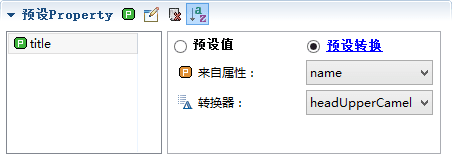

在模型转换的时候，可以通过预设方案得到我们想要的模型结构。
在实际的开发中，我们需要修改模型的内容，但都需要手动去做，有没有什么方法可以在模型转化的时候就设定好了呢？答案是有，那就是通过预设方案设定好属性列或者字段。
比如，数据库有一个book表，我们要根据book转换成一个模型，能够满足我们实际项目增删查改的功能。那么，单单靠一个原始的book模型是没法做到的，我们需要对这个模型添加一些属性和列做为标识。 这时，如果自己DIY模型，就要花一定的时间，时间就是金钱。如果通过预设的话，就能把想要的属性、列和字段直接生成。
数据库中有一张表
通过默认方式得到的模型，缺少我们需要的内容。
例如，根据业务需求，我们需要修改和新增模型的内容
其中type和fullType是用来生成字段的类型和完整类型
title、fieldName、controlType是新增时候的标识

isQuery是字段是否要查询的标识

模型页-->预设方案-->新预设-->输入预设名init
预设属性有2种取值方式，一种是填写预设值，另一种是预设转换。
双击或者按回车编辑
也可以点击右侧编辑图标
不同的填入的值会转成不同的java类型，使用ognl转型：
转成模型后
预设转换可以指定一个转换器，它能够把指定的属性值转换成新的值。
此处选择name，转换器选择headUpperCamel，它能把name的值转成头字母大写的驼峰式格式。
比如数据库的表名叫book_store，它会赋予name，而通过转型后值BookStore会赋予title。

我们在数据库中的表名为book，转成模型后，它会新建title属性并赋值Book。
关于转换器和映射更详细的内容请点击：映射和转换
对列的预设分成2部分
包括name，type，fullType：

同预设属性，预设列也有2种取值方式，一种是填写预设值，另一种是预设转换。
预设值就是填入固定值，此处填入myName。
则每个字段同一列都会生成同一个值。
但多数情况下，name，type，fullType这三个属性都是通过其它列转换而来
我们的转换方案：
转换器headLowerCamel，将输入的值value转成头字母小写的驼峰式格式
映射type，jdbcType映射到实际开发语言的类型。
映射fullType，jdbcType映射到实际开发语言的完整类型。
关于转换器headLowerCamel、映射type、fullType更详细的内容请点击：映射和转换
name，选择预设转换，来自列id，转换器headLowerCamel。
type，选择预设转换，来自列jdbcType，使用映射type。
fullType，选择预设转换，来自列jdbcType，使用映射fullType。
转换模型时， 选择预设方案init模型转换。
运行结果，按照我们的需求进行了转换。当然，也可以通过按钮手动转换，详细的内容请点击：映射和转换
同已存在的列预设，
我们的转换方案：
运行结果，按照我们的需求进行了转换。当然，也可以通过按钮手动转换，详细的内容请点击：映射和转换
点击任意格可以编辑，可以发现， controlType的列可以选三个选项和null； isQuery的列可以选择true、false和null。
新建一个字段price
生成新的字段。